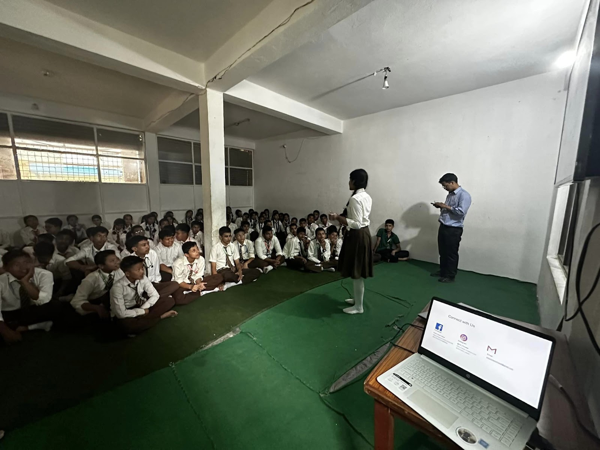
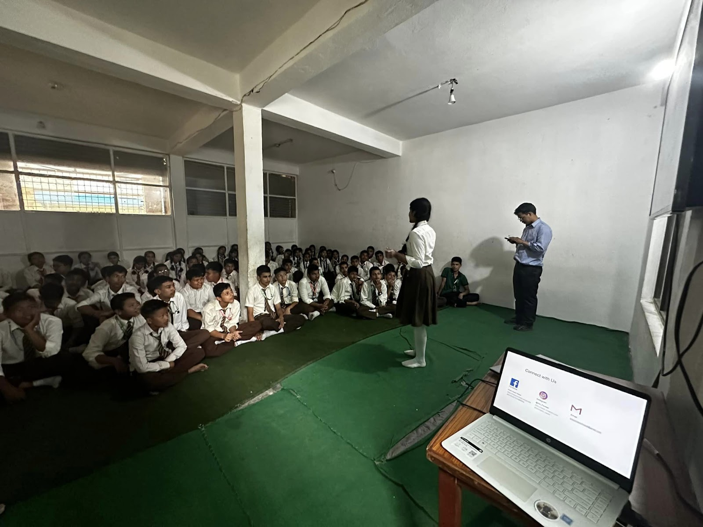

Celebration Overview
Green Impact Nepal organized comprehensive World Environment Day celebrations in collaboration with local schools, creating engaging educational programs that promote environmental awareness and inspire young minds to take action for environmental restoration. This annual celebration serves as a platform to educate the next generation about their role in protecting our planet.
World Environment Day, observed annually on June 5th, is the United Nations' flagship day for promoting worldwide awareness and action for the protection of our environment. Through school-based programs, we aimed to instill environmental values in students while providing them with practical knowledge and skills to become environmental stewards in their communities.
Educational Programs
The celebration featured interactive workshops, environmental awareness sessions, and hands-on activities designed to engage students of different age groups. Students participated in discussions about climate change, biodiversity conservation, pollution prevention, and sustainable living practices, making environmental education both fun and meaningful.
Practical activities included tree planting ceremonies, waste segregation demonstrations, and eco-friendly craft workshops using recycled materials. These activities helped students understand the practical applications of environmental concepts while developing their creativity and problem-solving skills in addressing environmental challenges.
Program Activities
Interactive Sessions
- Environmental awareness workshops
- Climate change education
- Biodiversity conservation talks
Hands-on Activities
- Tree planting ceremonies
- Eco-friendly craft workshops
- Waste management demonstrations
Educational Impact
The World Environment Day celebration successfully reached hundreds of students across participating schools, creating a lasting impact on their environmental consciousness and behavior. Students not only gained knowledge about environmental issues but also developed practical skills and enthusiasm for environmental protection. Many participants committed to implementing eco-friendly practices in their daily lives and becoming environmental ambassadors in their families and communities. This program demonstrates the power of education in creating positive environmental change and building a generation of environmentally conscious citizens who will lead Nepal's sustainable future.